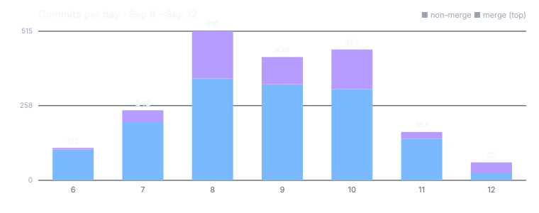

Four things changed this week
A quieter week by volume, and several of its largest changes took something away.
One chat, one theme
Chat's private appearance system and the separate Sessions app are gone. One theme setting now covers the whole app — light, dark, automatic or high contrast — and one chat surface lists conversations with people, assistants and groups.
The desktop app opens to its unlock screen
On a Mac, the installed app had been opening to a blank window. Two causes, both fixed: a missing file in the bundle, and a start-up page waiting for a kind of ready that a locked vault never reaches. The story: Double-click, and it opens.
The owner used the build as a stranger would
For three days the project's owner worked in a fresh demo build and reported 43 problems. By the end of the third day, 38 had a fix written, 33 of them on the day they were reported.
Agents got narrower hands
The agent that reads a stranger's bug report can now read, search, open a work item and wake a worker — no shell, no file editing. Release stages must be signed off by different people where more than one could, and build containers see only a read-only connection to the machine.
Fewer surfaces, each one real
The feature: what you see when you open NAOMS — the canvas, its windows, and where your conversations live.
Before: chat carried a theme system of its own, and two different apps listed conversations. Now: one appearance setting governs every app, and one chat surface holds people, assistants, groups and connected networks.
One theme, because apps must agree
The owner's ruling on 10 September was four short sentences: no per-surface theming, remove it, the theme is app-wide, and every app follows it. What went was substantial — six chat themes, user presets, a per-channel preference cascade and about 124 style rules — 12,525 lines removed, 851 added.
The shipped default chat view had never used any of it; most of the system lived on the chat's development line. Removing it before it reached everyone was the cheap moment.
The one control that remains sits in Configuration. It offers four choices over three painted themes: light, dark, high contrast, and automatic, which follows the operating system and changes when it does.
One list of conversations
Asked what the Sessions app was for when the chat window already lists sessions, the owner answered that the general chat surface already covers "all human + ai + groups + external adapters". The Sessions app was removed from all three clients.
One part of it turned out to be load-bearing: it was, improbably, the only code that set the app shell's theme. That engine moved to the settings package that owns the choice. The older full-page AI chat went the same way, taking its file from 12,803 lines to 9,524.
Small things that were quietly wrong
- A connection dot. The owner asked for an indicator "in the main UI" but "very subtle". It is six pixels, and it does not say connected while the socket is open but not yet signed in.
- Files dragged in from the desktop now land. The canvas showed a copy cursor, suppressed the browser's own handling, and then threw the file away.
What a person found in three days
Before an alpha — the first release people can use, with no promise yet that the next one reads its data — someone has to use the product without knowing where not to click. From 9 to 11 September the owner did exactly that, on a freshly set-up demo build.
He reported 43 problems. Photos that reached the file browser but not the Photos app. A wallet that could not see a group's shared treasury. A search that found "device" but not "devic" — which took two fixes. A group-creation wizard showing hardcoded names and credentials instead of your own.
By the end of the third day 38 had a fix written, 33 on the day they were reported. Most of those fixes reached the main line on 24 September; a few within a day. The full account, with the four fixes that teach the most, is its own article and is not yet published — it is held today for one unfilled screenshot.
The browser app — 149 changes. AI chat — 72. Chat — 71. Canvas — 35.
Give an agent only the hands the job needs
The feature: the AI agents that do work inside NAOMS and its own build system — reading bug reports, reviewing changes, running build stages.
Before: several of them inherited far more power than their job required. Now: each gets a role sized to the job, and the release path asks for different people at different stages.
A stranger's report meets a read-only reader
When a bug report arrives that no one is working on, an agent reads it and decides where it belongs. The report is text written by someone you do not know, and text can carry instructions.
That agent had been borrowing a coordinator's role, which silently brought a shell, file editing and auto-approved permissions. It now runs under its own role: read and search, open a work item, ask for a worker. Two tools that could write anything — a shell and a raw record-append — were removed from its list. The story: Untrusted bug reports get a narrow role.
Different hands for different stages
A release passes through distinct checks — tests, review, security. The owner's ruling: they "must be executed by different VRC holders if available, to prevent collusion". A VRC is the project's name for a verifiable credential recording a role someone holds.
The release gate now refuses when one person holds passing sign-offs for two different stages. The "if available" part is explicit, not assumed: the same person may cover two stages only when a count shows nobody else was eligible, and that exception is logged.
The credential that can carry publishing authority now exists. Nothing holds it yet, so the automatic publish step refuses — it will not publish as the owner instead — and says why. The full argument: The pipeline is the approval.
Context is not the same as scope
To save tokens, the automated code reviewer had been shown only what changed since its last verdict. The owner overruled it: the verdict "must be based on the entire diff for context", and the reviewer is instructed to rule only on the new part. It now sees the whole change, up to a large size cap, and is told which files are new.
Two more boundaries moved the same way. A change under review could alter the code of the gate judging it; most of that code now runs from the target branch's copy, and the few pieces that cannot are named on every run. And a build container, which needs to fetch code, now gets a read-only connection to the machine; the full one could publish under the machine's own identity.
The review pipeline — 345 changes. Build checks — 93. Bug-report plumbing — 34.
What this means, in plain terms
A permission list beats an instruction
Telling a model "this report is data, not a task" helps. The triage agent also runs under a role with no shell and no file editing, so an instruction hidden in a report has nothing to act with. Limit what an agent can do, not only what it is told.
Give a reviewer the whole picture and a narrow question
Trimming the reviewer's input to the latest changes saved tokens and removed the context those changes live in. Now it sees the full change and is told which part to rule on. Never narrow what a judge can see to narrow what it decides.
Two lists of the same thing will disagree
The Sessions app and the chat window both listed conversations, and the Sessions app also quietly owned the app's theme. Removing it meant finding that out first. Keep one surface per kind of thing, and move what is load-bearing before you delete.
A waiting screen must wait for the right kind of ready
The Mac start-up page reloaded only when the engine reported fully booted. With the vault locked, it never does, although the unlock screen was ready. Wait for the state the next screen needs, not a stronger one.
The person who does not know where not to click
A search found "device" but not "devic"; a wallet could not see a group's treasury. Tests had checked what their authors thought of. Three days of use found 43 problems. Before a release, use it as a stranger would.
How much healthier is it than a week ago?
The previous window is week 23, measured by the same rules, and its closing snapshot is this week's opening one. Two-thirds of this week's commits were made in its first four days.
the app lost a theme system, a duplicate app and an old chat page, gained one theme setting and an unlock screen that appears, and the skip markers rose by 89.
Four honest notes
- Most of this reached the main line later. The desktop fixes and the reviewer change landed within days; the chat, theme and canvas changes on 23 September, and the owner's three days of fixes on 24 September.
- The skip markers rose again, by 89, to 17,471 — faster than last week's
What changed, area by area
Files touched by the week's commits under each area's own folder, largest first; commits touching more than 150 files each are left out.
The largest areas — 345 down to 93 changes
A stage waiting on a sign-in is released when the credential arrives, not on a timer.
An offer to a waiting change is decided when it is spent, not an hour earlier against a version since replaced.
Among its changes: tools whose descriptions said they produced nothing, and one that required three arguments no caller could know.
Plumbing; this line is all it gets.
The connection dot, files dropped in from the desktop, and a group settings panel that ignored the light theme.
Starting a local engine no longer treats a silent port as a free one, and a watchdog stopped killing a live build engine on every restart, mistaking it for a stray.
A failure to set up a build machine now names the actual cause instead of listing five possible ones.
The next tier — 73 down to 34 changes
The group-creation wizard no longer shows hardcoded names and credentials on its second screen, one of the owner's reports.
The Sessions app and the old full-page chat, removed, and the one chat can now be handed an existing conversation.
A turn that arrived with its tools switched off no longer spins forever, and common prompt-injection phrasings are scrubbed from typed text before it reaches the model.
The per-chat theme system, removed.
A second press on Stop now discards a voice note, and permission to transcribe is per person, not per device.
Their copies of the browser app, kept in step.
The assistant can call any tool by name, gated on that tool's own permission, and an unknown name now triggers a search rather than an instruction to go and search.
Tool search stopped calling a tool available when it was not, and 148 generated tools gained real input descriptions.
The change-status command had answered "not found" about changes that exist, because it read runs and answered about changes; fixed.
Bug reports about built-in packages route to the project's own repository channel.
The release gate gained the eligible-signer count its distinct-stage check needs.
The separate data-export path was retired in favour of the whole-system backup, whose own story comes later.
Waking a worker for a report is event-driven rather than a one-minute poll, and a woken worker is now told not to start its own engine as a fallback.
A word like "the" no longer counts as relevance when deciding whether a request is allowed, and governance stopped refusing people for rules meant for the model.
The rules that shape the assistant now say that report content is data, not a second task.
A rate-limited search showed the same text as a broken one; now they differ.
The simpler report form: a description, an optional package, up to five real screenshots in the browser, and evidence gathered automatically.
A build-job grant is now recorded separately from its renewals, and negotiation messages get their own record that can be pruned.
Smaller areas — 30 down to 12 changes
Tests that shared process-wide state without a lock, and one "fix" for a flaky test that was itself a deadlock, were repaired.
The model list shows what this machine's engine can actually serve.
The landings chart now counts the main line, not the candidate, and shows reviewed and direct landings in two colours.
Groundwork for finding group members' machines and pushing writes to them.
Per machine and per channel, an owner can switch off scheduled build pipelines, from a panel the build system adds to the devices screen.
If the setting cannot be read, pipelines run.
Tool descriptions and tests only.
The owner's photo report: uploaded photos now reach the Photos app, because the import plan is written on a fresh device.
The one theme control: light, dark, automatic or high contrast.
Everything else moved by fewer than 12 files.
The areas that did not move
QUIET · 5 WEEKS — nothing this week; no feature work since 5 August.
QUIET · 4 WEEKS — nothing; no feature work since 14 August.
QUIET · 7 WEEKS — nothing since 20 July.
QUIET · 12 WEEKS — nothing since 19 June.
— four files, after last week's ninety.
The fix for the owner's photo report lives in the plugins package, listed above.